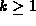
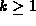
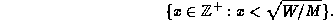
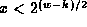
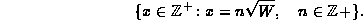

Data Structures and Algorithms
with Object-Oriented Design Patterns in C++
Data Structures and Algorithms
with Object-Oriented Design Patterns in C++
In this section we consider a hashing method
which avoids the use of division.
Since integer division is usually slower than integer multiplication,
by avoiding division we can potentially improve
the running time of the hashing algorithm.
We can avoid division by making use of the fact that
a computer does finite-precision integer arithmetic.
E.g., all arithmetic is done modulo W
where  is a power of two such that
w is the word size of the computer.
is a power of two such that
w is the word size of the computer.
The middle-square hashing method
works as follows.
First, we assume that M is a power of two,
say  for some .
Then, to hash an integer x,
we use the following hash function:
for some .
Then, to hash an integer x,
we use the following hash function:

Notice that since M and W are both powers of two,
the ratio  is also a power two.
Therefore, in order to multiply the term
is also a power two.
Therefore, in order to multiply the term  by M/W
we simply shift it to the right by w-k bits!
In effect,
we are extracting k bits from the middle of the square of the key--hence the name of the method.
by M/W
we simply shift it to the right by w-k bits!
In effect,
we are extracting k bits from the middle of the square of the key--hence the name of the method.
The following code fragment illustrates the middle-square method of hashing:
unsigned int const k = 10; // M==1024
unsigned int const w = bitsizeof (unsigned int);
unsigned int h (unsigned int x)
{ return (x * x) >> (w - k); }
Since x is an unsigned int,
the product x * x is also an an unsigned int.
If 32-bit integers are used,
the product is also a 32-bit integer.
The final result is obtained by shifting the product
w-k bits to the right,
where w is the number of bits in an integer. By definition, the right shift inserts zeroes on the left.
Therefore, the result always falls between 0 and M-1.
By definition, the right shift inserts zeroes on the left.
Therefore, the result always falls between 0 and M-1.
The middle-square method does a pretty good job
when the integer-valued keys are equiprobable.
The middle-square method also has the characteristic
that it scatters consecutive keys nicely.
However, since the middle-square method only considers
a subset of the bits in the middle of  ,
keys which have a large number of leading zeroes will collide.
E.g., consider the following set of keys:
,
keys which have a large number of leading zeroes will collide.
E.g., consider the following set of keys:

This set contains all keys x such that . For all of these keys h(x)=0.
A similar line of reasoning applies for keys which have a large number of trailing zeroes. Let W be an even power of two. Consider the set of keys

The least significant w/2 bits of the keys in this set are all zero.
Therefore, the least significant w bits of of  are also zero
and as a result h(x)=0 for all such keys!
are also zero
and as a result h(x)=0 for all such keys!
 Copyright © 1997 by Bruno R. Preiss, P.Eng. All rights reserved.
Copyright © 1997 by Bruno R. Preiss, P.Eng. All rights reserved.